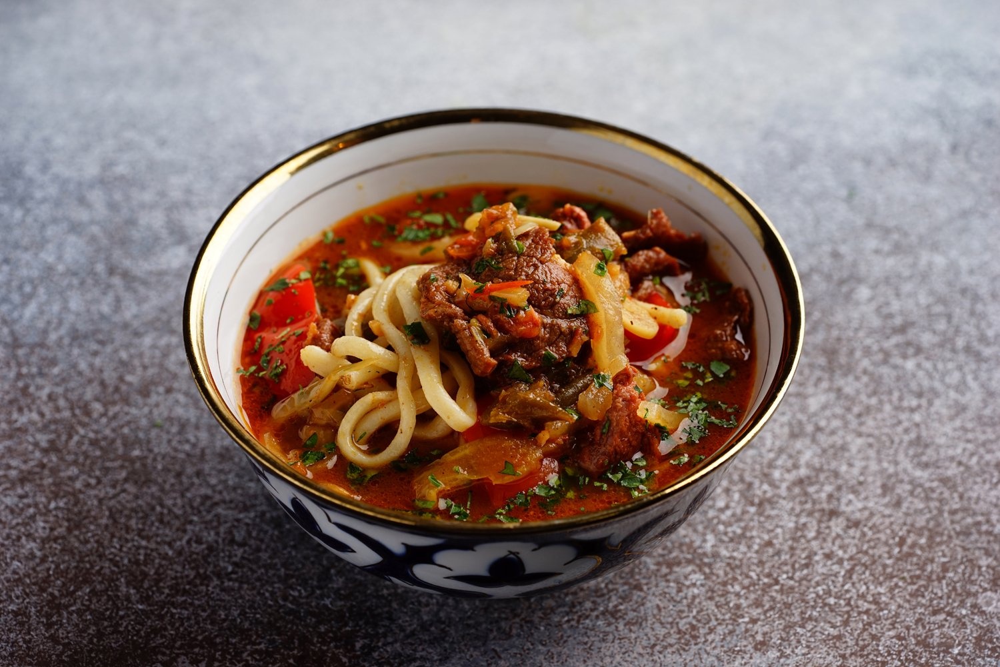

Ingredients for the dough:
- 1 cup warm water
- 1 Tbsp salt
- 2 eggs
- 3,5 cups all purpose flour
- 8 cups of water to cook the dough
- 2 Tbsp salt
- 2 Tbsp oil
Ingredients for the soup:
- 1/2 lb beef chuck (I use top round roast)
- 1/2 oil
- 1 medium onion
- 1 green bell pepper (I mostly use half yellow, half green pepper)
- 1 medium carrot
- 3 small potatoes
- 3 large cloves of garlic
- 1 medium tomato
- 1 tsp tomato paste (optional)
- 1/2 tsp black pepper
- 1 tsp ground cumin
- 2 tsp salt
- 8 glasses of water